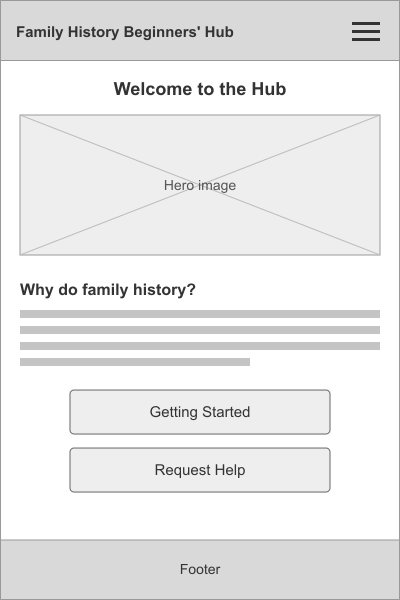
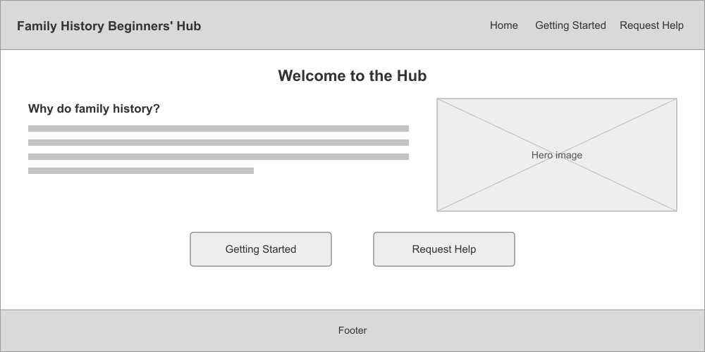

Site Name
The site will be called Family History Beginners' Hub because it is aimed at people who are completely new to family history and want a single place to start from. The planned domain name is family-history-hub.org. The word "beginners" is left out of the domain because it would make the address unnecessarily long.
Site Purpose
The site will be a starting point for people who are new to family history. It will explain why family history is worth doing and provide basic activities for getting started. The site will have three pages:
- Home - introduces the site and includes an about section on why you would want to do family history.
- Getting Started - a simple activity that walks visitors through starting their own family tree.
- Request Help - a form where visitors can ask for help with a specific area of their research.
Scenarios
These are the kinds of questions visitors to the site are likely to have:
- Given I have the names of my great-great grandparents, how can I find out when and where they were born?
- Why would I want to research family history in the first place?
Color Schema
Brown and green were chosen because they are the colors of a tree, representing a family tree.
- Brown (#4a3219) - header, footer and headings.
- Green (#356b3c) - links, buttons and borders.
Typography
Two fonts will be used across the site:
- Noto Sans (sans-serif) - headings and navigation.
- Noto Serif (serif) - body text.
Wireframes
Wireframes for the home page in mobile and desktop views.

